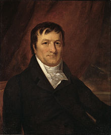

Johann Jakob Astor was born in Walldorf near Heidelberg in the old Palatinate.He was the youngest son of Johann Jakob Astor (July 7, 1724 – April 18, 1816) and Maria Magdalena Vorfelder (1730–1766).His three elder brothers were Georg Peter (later "George"; April 28, 1752 – December 3, 1813), Heinrich (later "Henry"; 1754–1833), and Melchior (1759–1829). Astor's father was a butcher; Johann first worked in his father's shop and as a dairy salesman.In 1779, at the age of 16, he moved to London to join his brother George in working for an uncle's piano and flute manufactory, Astor & Broadwood.While there, he learned English and anglicized his name.
In 1783 or March 1784, Astor immigrated to New York City, just following the end of the American Revolution, He rented a room from Sarah Cox Todd, a widow and began a flirtation with his landlady's daughter, Sara Cox Todd. His intent was to join his brother Henry, who had established a butcher shop there, but a chance meeting with a fur trader on his voyage inspired him to join the North American fur trade as well.After working at his brother's shop for a time he began to purchase raw hides from Native Americans, prepare them himself, and then resell them in London and elsewhere at great profit. He opened his own fur goods shop in New York in the late 1780s and also served as the New York agent of his uncle's musical instrument business.Fortune from fur trade[edit]
Astor took advantage of the Jay Treaty between Great Britain and the United States in 1794, which opened new markets in Canada and the Great Lakes region. In London, Astor at once made a contract with the North West Company, who from Montreal rivaled the trade interests of the Hudson's Bay Company, then based in London. Astor imported furs from Montreal to New York and shipped them to Europe. By 1800, he had amassed almost a quarter of a million dollars, and had become one of the leading figures in the fur trade. His agents worked throughout the western areas and were ruthless in competition. In 1800, following the example of the Empress of China, the first American trading vessel to China, Astor traded furs, teas, and sandalwood with Canton in China, and greatly benefited from it.
The U.S. Embargo Act in 1807, however, disrupted Astor's import/export business because it closed off trade with Canada. With the permission of President Thomas Jefferson, Astor established the American Fur Company on April 6, 1808. He later formed subsidiaries: the Pacific Fur Company, and the Southwest Fur Company (in which Canadians had a part), in order to control fur trading in the Great Lakes areas and Columbia River region. His Columbia River trading post at Fort Astoria (established in April 1811) was the first United States community on the Pacific coast. He financed the overland Astor Expedition in 1810–12 to reach the outpost. Members of the expedition were to discover South Pass, through which hundreds of thousands of settlers on the Oregon, Mormon, and California trails passed through the Rocky Mountains.
Astor's fur trading ventures were disrupted during the War of 1812, when the British captured his trading posts. In 1816, he joined the opium-smuggling trade. His American Fur Company purchased ten tons of Turkish opium, then shipped the contraband item to Canton on the packet ship Macedonian. Astor later left the China opium trade and sold solely to the United Kingdom.
Astor's business rebounded in 1817 after the U.S. Congress passed a protectionist law that barred foreign fur traders from U.S. territories. The American Fur Company came to dominate trading in the area around the Great Lakes. John Jacob Astor had a townhouse at 233 Broadway in Manhattan and a country estate, Hellgate in Northern New York City. In 1822, Astor established the Robert Stuart House on Mackinac Island as headquarters for the reorganized American Fur Company, making the island a metropolis of the fur trade. A lengthy description based on documents, diaries, etc. was given by Washington Irving in his travelogue Astoria. Astor's commercial connections extended over the entire globe, and his ships were found in every sea. And he and Sarah moved to a townhouse on Prince Street in Manhattan, New York.
Astor began buying land in New York in 1799 and acquired sizable holdings along the waterfront. After the start of the 19th century, flush with China trade profits, he became more systematic, ambitious, and calculating by investing in New York real estate. In 1803, he bought a 70-acre farm that ran west of Broadway to the Hudson River between 42nd and 46th streets. That same year, and the following year, he bought considerable holdings from the disgraced Aaron Burr.
In the 1830s, Astor foresaw that the next big boom would be the build-up of New York, which would soon emerge as one of the world's greatest cities. Astor withdrew from the American Fur Company, as well as all his other ventures, and used the money to buy and develop large tracts of Manhattan real estate. Astor correctly predicted New York's rapid growth northward on Manhattan Island, and he purchased more and more land beyond the then-existing city limits. Astor rarely built on his land, but leased it to others for rent and their use. After retiring from his business, Astor spent the rest of his life as a patron of culture. He supported the ornithologist John James Audubon in his studies, art work, and travels, and the presidential campaign of Henry Clay.Marriage and family[edit]
On September 19, 1785, Astor married Sarah Cox Todd (1762–1842), the daughter of Scottish immigrants Adam Todd and Sarah Cox. Although she brought him a dowry of only $300, she possessed a frugal mind and a business judgment that he declared better than that of most merchants. She assisted him in the practical details of his business,and managed Astor's affairs when he was away from New York
They had eight children: